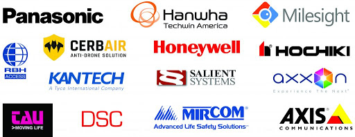
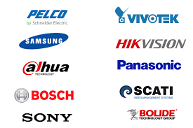

SOLUCIONES INFORMATICAS
PROFESIONALES PARA TU EMPRESA
Ofrecemos servicios de calidad en cuanto a seguridad se refiere, tenemos
una gama de productos y alianzas comerciales que nos permiten ofrecer a
nuestros clientes, precios altamente competitivos, de acuerdo a su presupuesto.


Circuito Cerrado de Televisión CCTV
Realizamos instalaciones de circuitos cerrados de cámaras, que permiten
a nuestros clientes tener un monitoreo real del inmueble. Nuestros sistemas
también permiten realizar la búsqueda de cualquier evento y seguir grabando
simultáneamente, en un sistema que cualquier persona puede manipular.
Controles de Acceso
 Son sistemas para controlar los accesos a diversas áreas de corporativos,
fábricas, edificios, condominios, etc. Se pueden utilizar tarjetas inteligentes,
de proximidad, lectores biométricos, lectores de larga distancia, video porteros, etc.
Son sistemas para controlar los accesos a diversas áreas de corporativos,
fábricas, edificios, condominios, etc. Se pueden utilizar tarjetas inteligentes,
de proximidad, lectores biométricos, lectores de larga distancia, video porteros, etc.
Pólizas de Mantenimiento
Se crea mediante un contrato de póliza de servicio, en el que ambas partes empresas
tienen acuerdos y responsabilidades en un acto de buena fe.
Ofrecemos inventario físico del equipo informático, más toda la información documentada
para que el cliente la tenga a la mano por cualquier evento, bitácora de servicios con los
cambios de configuración, contraseñas e información técnica que van realizándose de acuerdo a
los intereses que su empresa requiera.
Soporte técnico remoto y presencial.
Optimización de sistemas operativos.
Actualización de antivirus.
Configuración de red.
Permisos de usuario de red bajo dominio.
Configuración de servicios de impresión.
Revisión de hardware y software.
Mantenimiento preventivo y correctivo.
Seguridad y firewall.
Respaldos de información.
SERVICIO DE REPARACIÓN Y MANTENIMIENTO
DE EQUIPO DE COMPUTO
Ofrecemos servicios de diagnóstico, reparación, formateo, mantenimiento preventivo
y actualización de computadoras de escritorio y laptops, nos caracterizamos por el amplio conocimiento que
el equipo de Informática Total ha logrado recabar a lo largo de varios años de estar trabajando con
el software y hardware de las marcas más reconocidas en el mundo de la informática.
 Laptops
Diagnóstico, reparación, mantenimiento,
respaldo de información, cambio de componentes, etc.
 PCs
Respaldo de información,
actualización en software, etc.
|